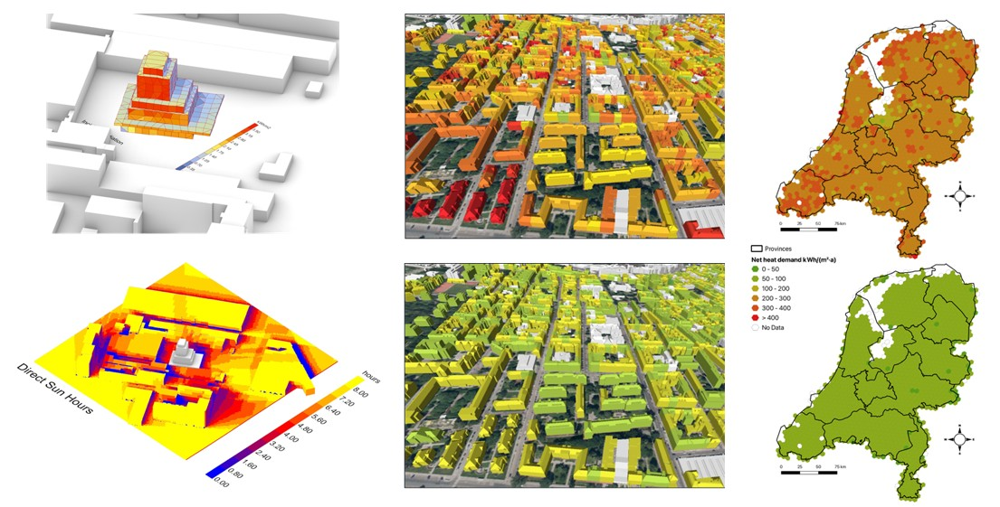

Urban Energy Laboratory
Welcome
The UrbäNRG Lab is embedded within the 3D Geoinformation group, part of the Department of Urbanism at TU Delft's Faculty of Architecture and Built Environment.
We are an international group of researchers working on heterogeneous topics dealing with energy in the built environment — urban sustainability, urban transition, and ongoing digitalisation processes.
Together with TU Delft and international colleagues we investigate how Urban Digital Twins can support stakeholders in co-creating urban solutions, moving from top-down planning to bottom-up approaches.

Research topics & vision
Our research spans urban digital twinning (based on semantic 3D city models), urban-scale energy simulation, and data modelling and standardisation. The leitmotif is to foster software and data integration for complex urban system simulations — bridging geo-information and urban planning to support engineers, architects, urban planners, and ultimately citizens.
We strongly believe in open science: open-access publications, open-source software, and reproducible methodologies, to maximise societal impact.
Get in contact
TU Delft, Faculty of Architecture and Built Environment
Julianalaan 134, 2628 BL Delft, The Netherlands